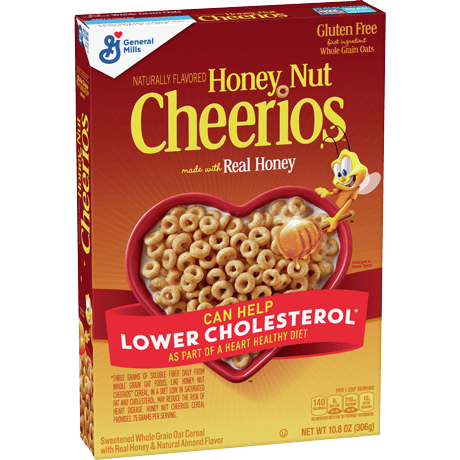
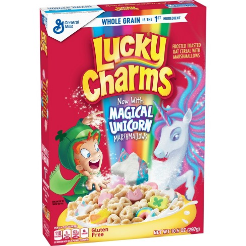

Cap'n Crunch

Cap'n Crunch is my all time favorite cereal. It has very good structural integrity and can stand up to milk extremely well, giving you ample time to enjoy without it getting soggy. Even when it does soak in the milk for a while, it gets even better! Slightly softer and chewier while still keep that classic crunch that I'm looking for, and it also makes the milk taste delicious. It's very sweet, but in a way I don't mind, and it doesn't taste like pure sugar like some other cereals. If you eat it too fast it can fuck up the roof of your mouth, but that's a risk I'm willing to take. It's a pure delight every time I pour myself a bowl.
Honey Nut Cheerios

Honey Nut Cheerios are straight up awesome. They far exceed regular Cheerios, but they still make you feel like you aren't eating something terribly unhealthy. You can truly taste the honey and the nutty flavors, which is rare amongst one note sugary cereals. The shiny coating of sugar around the cheerio makes it stand up to milk much better than regular Cheerios while also giving it the sweetness I crave. It's a childhood cereal that transitions well into adulthood and I love it.
Lucky Charms

Lucky Charms. They are magically delicious. Lucky Charms is probably the cereal I ate most as a child, and that childhood love definitely has an impact on its ranking. The marshmallows are perfect, the dehydrated format works well when soaked in milk, making them softer and the milk sweeter. The oat pieces themself are also pretty good! They have the same shiny sugar coating as Honey Nut Cheerios, which I've already explained why I love. Each bite tends to be well balanced with the sweetness of the marshmallows and the crunch of the oat pieces. It's also the cereal I enjoy most with oat milk (my preferred milk alternative). Very well done cereal.